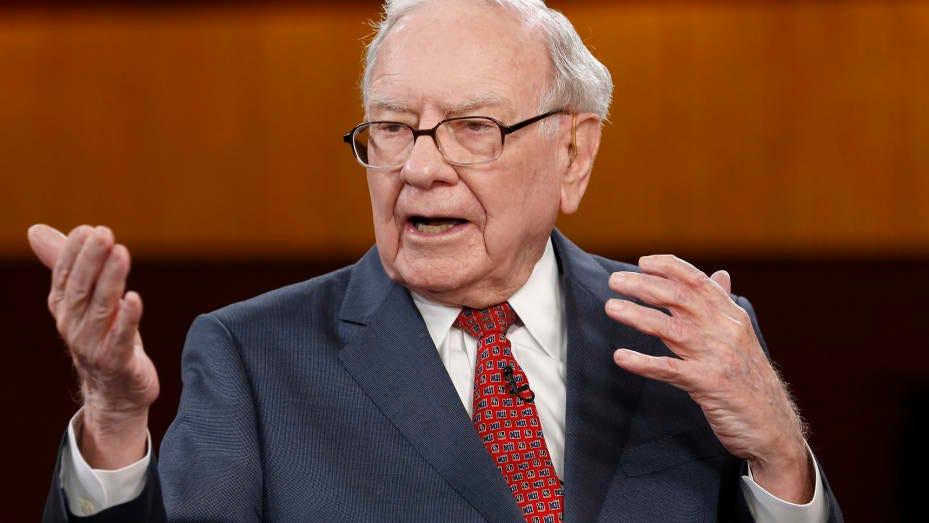
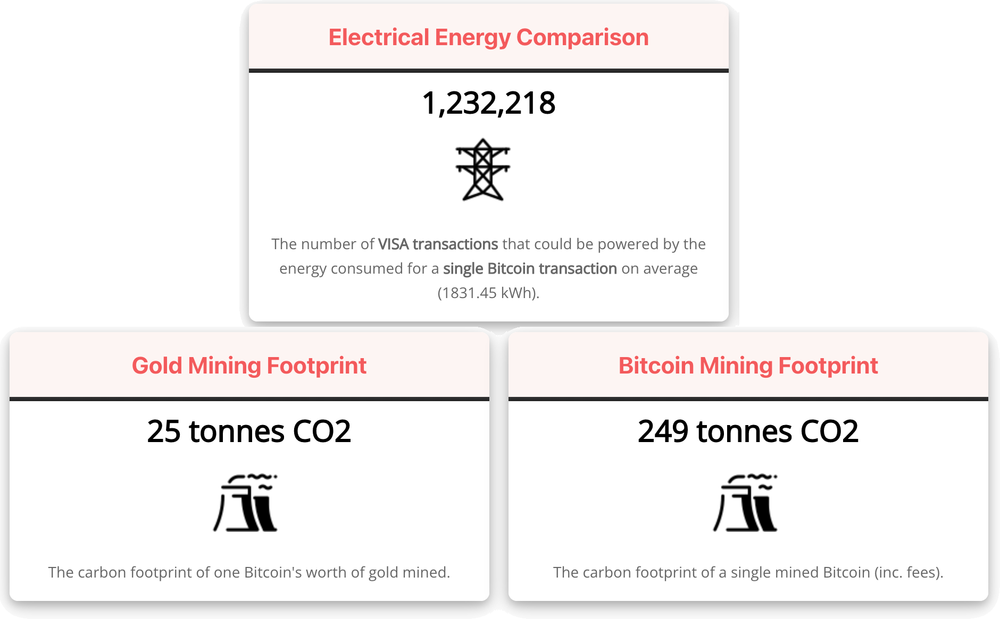
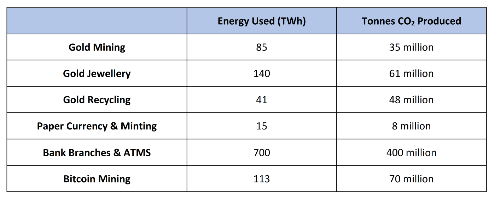
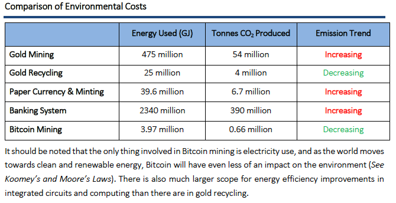

I’m Jonathan Burbaum, and this is Healing Earth with Technology: a weekly, Science-based, subscriber-supported serial. In this serial, I offer a peek behind the headlines of science, focusing (at least in the beginning) on climate change/global warming/decarbonization. I welcome comments, contributions, and discussions, particularly those that follow Deming’s caveat , “In God we trust. All others, bring data.” The subliminal objective is to open the scientific process to a broader audience so that readers can discover their own truth, not based on innuendo or ad hominem attributions but instead based on hard data and critical thought.
You can read Healing for free, and you can reach me directly by replying to this email. If someone forwarded you this email, they’re asking you to sign up. You can do that by clicking here .
If you really want to help spread the word, then pay for the otherwise free subscription. I use any fees to increase readership through Facebook and LinkedIn ads.
Today’s read: 10 minutes.

Regarding Bitcoin, consider this view:
“Stay away from it. It’s a mirage, basically. It’s a method of transmitting money. It’s a very effective way of transmitting money and you can do it anonymously and all that. A check is a way of transmitting money, too. Are checks worth a whole lot of money just because they can transmit money? Are money orders? You can transmit money by money orders. People do it. I hope Bitcoin becomes a better way of doing it, but you can replicate it a bunch of different ways and it will be. The idea that it has some huge intrinsic value is just a joke in my view.” Warren Buffett on CNBC’s Squawk Box, 2014 .
I’ve gotten variations on this question from many directions, so I thought I’d lay it out as another thought experiment.
Back in March, my future patron, Elon Musk, ventured that cryptocurrency (specifically, Bitcoin) has a deleterious effect on the environment due to the energy intensity of “mining”. With a single tweet, he declared you could no longer buy a Tesla with it because it’s terrible for the environment (and, by extension, for the Tesla brand). As a consequence, Bitcoin dropped significantly in value. As I’ve pointed out, if you compare something with nothing, everything we do (including breathing) has a deleterious effect on the environment! But is this just a marketing gimmick (and a way to manipulate currency markets with Twitter), or is there something to it?
First of all, let me say that, although I am throwing shade in Elon’s direction for the second installment in a row, I have a lot of respect for what he’s been able to accomplish. He brings an engineering sensibility to technology marketing that few others (Steve Jobs comes to mind) have been capable of. But, it’s still marketing that needs to hold up to math.
As in the last installment, let’s aim for comparison rather than throwing out absolute numbers. At some point, “billion” blurs with “million”, and the scale of anything in the energy field is difficult to imagine. So the salient question isn’t “How big is it?”, it’s “What are my choices?”
In this installment, we’ll have to wade into the controversy over the carbon footprint of cryptocurrency. Crypto is an electronic asset that you hold rather than a loan that needs to be paid, so one comparison (despite the title of this installment) is with a debit card. To make the comparison tangible, imagine that you’re looking to buy a Tesla and that you have enough money both in your checking account and in your (Bitcoin) digital wallet to complete the purchase. What’s the better choice, from a carbon footprint perspective?
This choice requires a deeper understanding of cryptocurrency than I have. In fact, it probably needs more profound knowledge than any one person has! Any financial instrument that Warren Buffett calls a “mirage” will be hard to explain on its face! Furthermore, the energy impact of crypto is also controversial enough (at least in the way opinionistas today stir up controversy) that no matter which choice is made, somebody will claim (with ample evidence pulled from the Internet) that it was the wrong one. This is a long way of saying, “If you’re looking for the bottom line answer, it’s not here. You’ll have to do your own thinking.” However, I can provide the perspective and tools needed to reduce the problem to the essentials and then lay out the controversial points, hopefully in an accessible fashion.
Back to the two electronic transactions: Do I buy a Tesla with Bitcoin or a debit card? Let’s look at the guts, where the monetary value represented in the price of the car is transferred from buyer to merchant—everything else is external and can be equalized. In a debit card transaction, that transfer involves the following steps:
-
The buyer’s card information is transmitted to the processing network (Visa, MasterCard, etc.).
-
The processing network verifies the data and evaluates it for the possibility of fraud.
-
The processing network then sends the data to the issuing bank (i.e., the bank that issued the buyer’s debit card).
-
The issuing bank confirms that funds are available and transfers funds to the merchant.
In a cryptocurrency transaction, that transfer involves a different set of steps:
-
The transaction (both buyer and merchant) is broadcast to the Bitcoin Network.
-
“Miners” confirm the transaction, including the availability of funds.
-
Miners periodically package unspent transactions into a block and broadcast them to the network to ensure that the same funds are not being spent elsewhere.
-
Every 10 minutes, blocks are checked. If a block is legitimate, it is included in the shared ledger known as the blockchain, and neither party can reverse the transaction.
-
Because the buyer cannot spend the bitcoin elsewhere, the merchant can now use this bitcoin in another transaction.
The main difference between a debit card and cryptocurrency is the process of validation, where “miners” provide computer processing power and prevent fraud in the system in exchange for rewards in the form of new Bitcoin. “Mining” is the core process for legitimizing a block of transactions and is akin to cracking someone’s password through trial and error. It is computationally intensive 1 and adds the element of cryptography to the currency.
So, in choosing how to buy my Tesla, I have to compare the energy used for two computational processes, the network of banks involved in validating an individual transaction and the network of miners involved in validating a block of transactions. It’s a tough comparison, fraught with the same sort of “occupancy” problem covered in the last installment—how many transactions are in a block? Plus, because the system architectures are different for the two validation methods, it’s not just a matter of counting the number of calculations—card processing is variable and on-demand, while mining is fixed and periodic. Card processing needs to respond instantaneously, while miners can mine on dedicated hardware in the background. Etc. etc.
Furthermore, the comparison of emissions is even more demanding. The behind-the-scenes electrical energy for mining comes from a wide variety of sources, both carbon dioxide generating and carbon-free, and the energy efficiency of computational hardware varies. So not only do we need to know how much computation is being done, but we also need to know both how and where it is being done.
The bottom line: Anyone who claims to have the “answer” to cryptocurrency’s carbon footprint is either lying or delusional or both.
So, let’s take a different tack and critically examine “reports” (opinions, really) about the carbon footprint of crypto, starting from the full knowledge that the opinionistas are providing opinions rather than facts.
Digiconomist
The most common source of Bitcoin’s “footprint” is Alex de Vries, an economist and creator of the Digiconomist website. Since 2017, he has used a model of the Bitcoin mining network to estimate the electricity use per transaction, charting it as the Bitcoin Energy Consumption Index.
This model is a bottom-up (“shopping cart”) approach that relies on several assumptions, and for my regular readers, you’ll know that, like all models, his model is wrong. But is it useful? Here’s a couple of his (many) takeaways.

From Alex’s calculations, he concludes that, for the same amount of electricity as a single Bitcoin transaction, you could do 1.2 million Visa transactions. For the same carbon emissions, you could mine ten times as much gold! Impressive! Definitely a tweet-able factoid.
But, think about it. There are 18,749,318.75 bitcoins as of this writing, and each mining cycle adds 6.25 Bitcoins or 0.00003%. This is the total “transaction fee” associated with the cycle, and it is the cost of validation. On the other hand, Visa charges merchants around 2% for each transaction, at least part of which is the Visa network’s cost of validation. That doesn’t smell right—If I were choosing an investment based on this model, I would invest in Visa long before I’d invest in Bitcoin mining!! [Alex’s stated energy consumed (1831.45 kWh) would cost over $150 per transaction based on the going rate for bulk electricity in Sichuan, China. In contrast, the average transaction fee paid by buyers is $23. That’s no business!] The same calculation is valid for gold mining since carbon is energy, as I’ve pointed out before.
The bottom line, I don’t think Alex’s model is helpful because, if it were even close to accurate, Bitcoin miners would be wiped out due to ridiculously high energy costs and/or ridiculously low margins. But miners continue to find it profitable to mine—Without mining, Bitcoin ceases to exist. It’s the same dilemma I covered earlier. It’s a “cost-based” pricing model that starts with engineering ‘principles’ and then extrapolates them (with assumptions) to economics. I’ll stop short of declaring it “fake news”, but there has to be a serious problem in the underlying assumptions for the model to be that far off.
The Held Report
This is from a Medium newsletter series composed by Dan Held, a long-time crypto enthusiast with a finance/marketing background. He directly disputes Alex in this installment of his newsletter. Instead of looking at the energy cost per transaction, Dan proposes an alternative metric, the return-on-investment (ROI), based on energy consumption. Specifically, he states that Alex’s model fails because:
…the KPI [key performance indicator metric] of his [Alex’s] choosing was intentionally misleading: “the electricity consumption per transaction” for several reasons:
The energy spent is per block, which can have a varying number of transactions. More transactions does not mean more energy
The economic density of a Bitcoin transaction is always increasing ( Batching , Segwit , Lightning , etc). As bitcoin becomes more of a settlement network, each unit of energy is securing exponentially more and more economic value.
The average cost per transaction isn’t an adequate metric for measuring the efficiency of Bitcoin’s PoW [Proof-of-work], it should be defined in terms of the security of an economic history. The energy spend secures the stock of bitcoin, and that percentage is going down over time as inflation decreases. A Bitcoin “accumulates” the energy associated with all the blocks mined since its creation. LaurentMT , a researcher, has found empirically that Bitcoin’s PoW is indeed becoming more efficient over time: increasing cost is counterbalanced by the even greater increasing total value secured by the system.
….
Bitcoin is a super commodity, minted from energy, the fundamental commodity of the universe. PoW transmutes electricity into digital gold.
Cosmic, man.
What Dan is arguing here, is that the carbon footprint is not as simple as a cost per transaction. It’s a commodities-based race toward razor-thin profit margins as mining costs approach the (localized) cost of power. Mining will naturally cease when it operates at an economic loss. It’s an argument that resonates with me. But Dan doesn’t provide an equivalent comparison to choose the lowest carbon footprint approach to buy my Tesla!
As a note, Visa’s profit margins are roughly 50%, so, if it’s a race to zero, I’d still invest in Visa before I’d invest in Bitcoin mining!
Hass McCook
Hass is an engineer with an MBA and a self-described “Bitcoin Evangelist”. He has written a series of articles on the energy impact of Bitcoin and produced the following table:

This isn’t particularly helpful, either! McCook compares Bitcoin mining with the front end of banking rather than comparing electronic processes in the background. [To be fair, he admits as much.] He’s also comparing Bitcoin mining with gold mining, perhaps a better comparison at the conceptual level, but it doesn’t really work for our Tesla purchase dilemma. He reports that gold mining is half as energy-intensive as Bitcoin mining, at least in carbon terms, which seems closer to reality than Alex’s ten-fold difference.
I couldn’t easily find the underlying basis for the table, but I did find this in an earlier treatment :

This report (marked as per the custom with economists as “obsolete”) shows how fluid the assumptions are. Whatever went into this table showed that gold mining was a lot more expensive (in carbon terms) than Bitcoin mining. Now, it’s cheaper?
So, I’m late with this release, but I guess I’m not buying a Tesla today. Of course, I haven’t accounted for the carbon footprint of my decision-making process. However, my bet would be on Bitcoin, or some form of cryptocurrency, as a more energy-efficient way to transfer money than a debit card—there are no people involved, and the code that needs to run is static, so economies of scale will drive operating expenses down a lot faster than conventional computing. It’s just a gut feeling, though.
Until next time.
This is known as “Proof-of-work”, which the Bitcoin algorithm is based on. The alternative is “Proof-of-stake”, which is more like conventional banking, where validation is based on how much of the cryptocurrency is held or “at stake” by the validator.